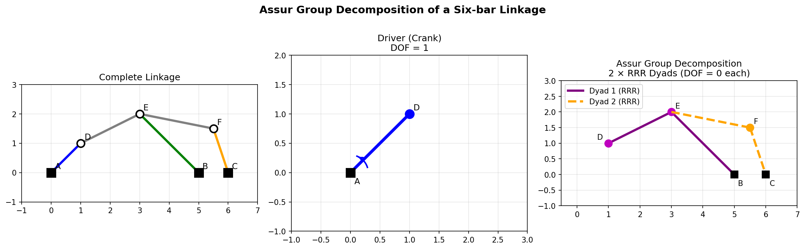
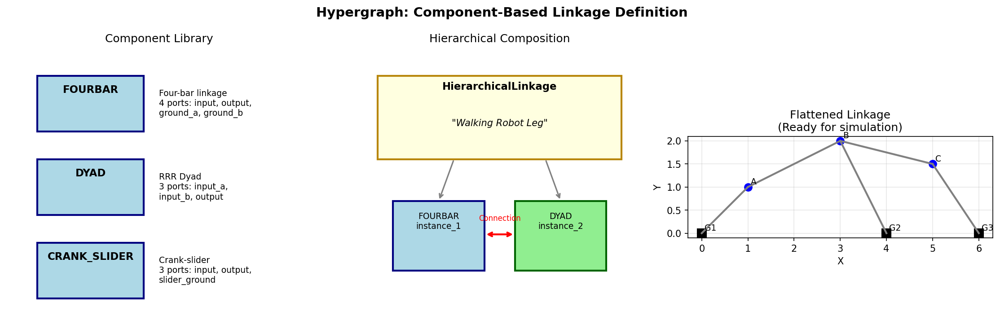

Graph-Based Linkage Representation
This tutorial covers pylinkage’s graph-based representations for linkages:
Assur module: Formal kinematic decomposition using Assur group theory
Hypergraph module: Hierarchical component-based linkage definition
These representations are useful for:
Structural analysis of linkage topology
Building complex mechanisms from reusable components
Automated linkage generation and transformation
Research in mechanism theory
Assur Group Theory
{kind=link}

Decomposition of a six-bar linkage into a driver (crank) and two RRR dyads. Each Assur group has zero degrees of freedom and can be solved independently.
Overview
Assur groups are the fundamental building blocks of planar linkages. Any planar linkage can be decomposed into:
A driver (typically a crank)
One or more Assur groups (zero-DOF kinematic chains)
The main Assur group types in planar mechanisms are:
RRR dyad: Three revolute joints forming a triangle
RRP dyad: Two revolute joints and one prismatic joint
RPR dyad: Revolute-prismatic-revolute configuration
PRR dyad: Prismatic-revolute-revolute configuration
Creating a Linkage Graph
from pylinkage.assur import LinkageGraph, Node, Edge
# Create nodes (joints)
ground_a = Node(id="A", x=0, y=0, is_ground=True)
ground_b = Node(id="B", x=4, y=0, is_ground=True)
crank_tip = Node(id="C", x=1, y=0)
coupler = Node(id="D", x=3, y=2)
# Create edges (links)
crank = Edge(id="crank", nodes=["A", "C"], length=1.0)
link_cd = Edge(id="coupler", nodes=["C", "D"], length=3.0)
link_bd = Edge(id="rocker", nodes=["B", "D"], length=3.0)
# Assemble the graph
graph = LinkageGraph(
nodes=[ground_a, ground_b, crank_tip, coupler],
edges=[crank, link_cd, link_bd],
driver_edge="crank",
)
print(f"Nodes: {[n.id for n in graph.nodes]}")
print(f"Edges: {[e.id for e in graph.edges]}")
print(f"Driver: {graph.driver_edge}")
Expected output:
Nodes: ['A', 'B', 'C', 'D']
Edges: ['crank', 'coupler', 'rocker']
Driver: crank
Decomposing into Assur Groups
from pylinkage.assur import decompose_assur_groups
# Decompose the linkage
groups = decompose_assur_groups(graph)
print(f"Found {len(groups)} Assur groups:")
for i, group in enumerate(groups):
print(f"\nGroup {i + 1}: {type(group).__name__}")
print(f" Joints: {group.joint_ids}")
print(f" Links: {group.link_ids}")
Expected output:
Found 1 Assur groups:
Group 1: DyadRRR
Joints: ['C', 'D']
Links: ['coupler', 'rocker']
Assur Group Types
from pylinkage.assur import DyadRRR, DyadRRP, DyadRPR, DyadPRR
# RRR Dyad: All revolute joints (most common)
# Used when both constraints are distance-based
rrr = DyadRRR(
joint_ids=["C", "D"],
link_ids=["coupler", "rocker"],
parent_joints=["A", "B"],
distances=[3.0, 3.0],
)
# RRP Dyad: Two revolute, one prismatic
# Used when one joint slides along a line
rrp = DyadRRP(
joint_ids=["C", "D"],
link_ids=["coupler", "slider"],
parent_joints=["A", "B"],
distance=3.0,
line_angle=0.0, # Angle of sliding line
)
# Each dyad can be solved independently
position_c, position_d = rrr.solve(
parent_positions=[(0, 0), (4, 0)],
initial_guess=[(1, 0), (3, 2)],
)
Converting Graph to Linkage
from pylinkage.assur import graph_to_linkage
import pylinkage as pl
# Convert graph representation to simulatable Linkage
linkage = graph_to_linkage(graph)
print(f"Created linkage with {len(linkage.joints)} joints")
for joint in linkage.joints:
print(f" {joint.name}: {type(joint).__name__}")
# Now use standard simulation and visualization
loci = list(linkage.step())
pl.show_linkage(linkage)
Expected output:
Created linkage with 2 joints
C: Crank
D: Revolute
Serializing Linkage Graphs
Save and load graph representations:
from pylinkage.assur import LinkageGraph, graph_to_json, graph_from_json
# Save to JSON
json_str = graph_to_json(graph)
print(json_str)
# Load from JSON
loaded_graph = graph_from_json(json_str)
# Save to file
with open("linkage_graph.json", "w") as f:
f.write(graph_to_json(graph))
# Load from file
with open("linkage_graph.json", "r") as f:
graph = graph_from_json(f.read())
Hypergraph Representation
{kind=link}

Component-based linkage design: a library of reusable components (left), hierarchical composition (middle), and the flattened result (right).
Overview
The hypergraph module provides a higher-level abstraction for building complex linkages from reusable components. Key concepts:
Node: A point in the linkage (joint location)
Edge: A binary connection (link between two nodes)
Hyperedge: A connection involving multiple nodes (complex joints)
Component: A reusable subgraph with ports for connection
HierarchicalLinkage: A linkage built from component instances
Creating a Hypergraph Linkage
from pylinkage.hypergraph import (
HypergraphLinkage,
Node,
Edge,
Hyperedge,
)
# Create a simple four-bar as a hypergraph
graph = HypergraphLinkage()
# Add nodes
graph.add_node(Node(id="ground_a", x=0, y=0, is_fixed=True))
graph.add_node(Node(id="ground_b", x=4, y=0, is_fixed=True))
graph.add_node(Node(id="crank_tip", x=1, y=0))
graph.add_node(Node(id="coupler", x=3, y=2))
# Add edges (links)
graph.add_edge(Edge(id="crank", source="ground_a", target="crank_tip", length=1.0))
graph.add_edge(Edge(id="coupler_link", source="crank_tip", target="coupler", length=3.0))
graph.add_edge(Edge(id="rocker", source="ground_b", target="coupler", length=3.0))
print(f"Hypergraph has {len(graph.nodes)} nodes and {len(graph.edges)} edges")
Defining Reusable Components
from pylinkage.hypergraph import Component, Port
# Define a four-bar component with configurable ports
fourbar_component = Component(
name="FourBar",
description="A standard four-bar linkage",
# Define connection ports
ports=[
Port(id="input", node="crank_tip", description="Crank output"),
Port(id="output", node="coupler", description="Coupler point"),
Port(id="ground_a", node="ground_a", description="Fixed pivot A"),
Port(id="ground_b", node="ground_b", description="Fixed pivot B"),
],
# Define parameters
parameters={
"crank_length": 1.0,
"coupler_length": 3.0,
"rocker_length": 3.0,
"ground_length": 4.0,
},
)
# Add the internal structure
fourbar_component.add_node(Node(id="ground_a", x=0, y=0, is_fixed=True))
fourbar_component.add_node(Node(id="ground_b", x="${ground_length}", y=0, is_fixed=True))
fourbar_component.add_node(Node(id="crank_tip", x="${crank_length}", y=0))
fourbar_component.add_node(Node(id="coupler", x=3, y=2))
fourbar_component.add_edge(Edge(
id="crank",
source="ground_a",
target="crank_tip",
length="${crank_length}"
))
fourbar_component.add_edge(Edge(
id="coupler_link",
source="crank_tip",
target="coupler",
length="${coupler_length}"
))
fourbar_component.add_edge(Edge(
id="rocker",
source="ground_b",
target="coupler",
length="${rocker_length}"
))
Using Built-in Components
Pylinkage provides pre-built components:
from pylinkage.hypergraph import FOURBAR, DYAD, CRANK_SLIDER
# Use the built-in four-bar component
print(f"FOURBAR ports: {[p.id for p in FOURBAR.ports]}")
print(f"FOURBAR parameters: {FOURBAR.parameters}")
# Use the built-in dyad component
print(f"DYAD ports: {[p.id for p in DYAD.ports]}")
Expected output:
FOURBAR ports: ['input', 'output', 'ground_a', 'ground_b']
FOURBAR parameters: {'crank_length': 1.0, 'coupler_length': 3.0, ...}
DYAD ports: ['input_a', 'input_b', 'output']
Building Hierarchical Linkages
Compose complex mechanisms from component instances:
from pylinkage.hypergraph import (
HierarchicalLinkage,
ComponentInstance,
Connection,
FOURBAR,
DYAD,
)
# Create a hierarchical linkage
linkage = HierarchicalLinkage(name="Double Four-bar")
# Add component instances
linkage.add_instance(ComponentInstance(
id="fourbar1",
component=FOURBAR,
parameters={
"crank_length": 1.0,
"coupler_length": 3.0,
"rocker_length": 3.0,
"ground_length": 4.0,
},
position=(0, 0),
))
linkage.add_instance(ComponentInstance(
id="fourbar2",
component=FOURBAR,
parameters={
"crank_length": 0.8,
"coupler_length": 2.5,
"rocker_length": 2.5,
"ground_length": 3.0,
},
position=(5, 0),
))
# Connect the two four-bars
linkage.add_connection(Connection(
source_instance="fourbar1",
source_port="output",
target_instance="fourbar2",
target_port="ground_a",
))
print(f"Hierarchical linkage has {len(linkage.instances)} instances")
Flattening to Hypergraph
Convert a hierarchical linkage to a flat hypergraph:
# Flatten the hierarchy
flat_graph = linkage.flatten()
print(f"Flattened graph has {len(flat_graph.nodes)} nodes")
print(f"Flattened graph has {len(flat_graph.edges)} edges")
# Convert to simulatable Linkage
from pylinkage.hypergraph import to_linkage
sim_linkage = to_linkage(flat_graph)
Converting Between Representations
Hypergraph to Assur Graph
from pylinkage.hypergraph import to_assur_graph
assur_graph = to_assur_graph(flat_graph)
# Now use Assur decomposition
from pylinkage.assur import decompose_assur_groups
groups = decompose_assur_groups(assur_graph)
print(f"Decomposed into {len(groups)} Assur groups")
Linkage to Hypergraph
import pylinkage as pl
from pylinkage.hypergraph import from_linkage
# Create a standard linkage
crank = pl.Crank(0, 1, joint0=(0, 0), angle=0.31, distance=1)
output = pl.Revolute(3, 2, joint0=crank, joint1=(4, 0), distance0=3, distance1=3)
linkage = pl.Linkage(joints=(crank, output))
# Convert to hypergraph
graph = from_linkage(linkage)
print(f"Converted to hypergraph with {len(graph.nodes)} nodes")
Practical Example: Stephenson Six-bar
Build a Stephenson Type I six-bar linkage using components:
from pylinkage.hypergraph import (
HierarchicalLinkage,
ComponentInstance,
Connection,
FOURBAR,
DYAD,
)
# Stephenson I: Four-bar with a dyad attached to the coupler
stephenson = HierarchicalLinkage(name="Stephenson Type I")
# Base four-bar
stephenson.add_instance(ComponentInstance(
id="base_fourbar",
component=FOURBAR,
parameters={
"crank_length": 1.0,
"coupler_length": 4.0,
"rocker_length": 3.0,
"ground_length": 5.0,
},
position=(0, 0),
))
# Additional dyad attached to coupler
stephenson.add_instance(ComponentInstance(
id="extra_dyad",
component=DYAD,
parameters={
"length_a": 2.0,
"length_b": 2.5,
},
))
# Connect dyad to four-bar coupler and ground
stephenson.add_connection(Connection(
source_instance="base_fourbar",
source_port="coupler_point",
target_instance="extra_dyad",
target_port="input_a",
))
stephenson.add_connection(Connection(
source_instance="base_fourbar",
source_port="ground_c", # Additional ground point
target_instance="extra_dyad",
target_port="input_b",
))
# Flatten and simulate
flat = stephenson.flatten()
linkage = to_linkage(flat)
import pylinkage as pl
pl.show_linkage(linkage)
Analysis Applications
Mobility Analysis
from pylinkage.assur import compute_mobility
# Gruebler's equation: M = 3(n-1) - 2*j1 - j2
# n = number of links, j1 = 1-DOF joints, j2 = 2-DOF joints
mobility = compute_mobility(graph)
print(f"Mechanism mobility (DOF): {mobility}")
if mobility == 1:
print("Single-DOF mechanism (typical linkage)")
elif mobility == 0:
print("Structure (no motion)")
elif mobility > 1:
print(f"Under-constrained ({mobility} DOF)")
Structural Classification
from pylinkage.assur import classify_structure
classification = classify_structure(graph)
print(f"Structure type: {classification.type}")
print(f"Is overconstrained: {classification.is_overconstrained}")
print(f"Is underconstrained: {classification.is_underconstrained}")
print(f"Redundant constraints: {classification.redundant_constraints}")
Isomorphism Detection
Check if two linkages have the same topology:
from pylinkage.hypergraph import are_isomorphic
graph1 = create_fourbar_graph(1, 3, 3, 4)
graph2 = create_fourbar_graph(2, 4, 4, 5) # Different dimensions, same topology
if are_isomorphic(graph1, graph2):
print("Linkages have the same topology")
else:
print("Different topologies")
Serialization
Save and load hypergraph representations:
from pylinkage.hypergraph import (
hypergraph_to_json,
hypergraph_from_json,
component_to_json,
component_from_json,
)
# Save hypergraph
json_str = hypergraph_to_json(graph)
with open("linkage.json", "w") as f:
f.write(json_str)
# Load hypergraph
with open("linkage.json", "r") as f:
loaded = hypergraph_from_json(f.read())
# Save custom components for reuse
component_json = component_to_json(fourbar_component)
with open("fourbar_component.json", "w") as f:
f.write(component_json)
When to Use Graph Representations
Use Assur module when:
You need formal kinematic analysis
You want to understand the structure of a linkage
You’re implementing new solving algorithms
You need to verify linkage properties
Use Hypergraph module when:
You’re building complex mechanisms from parts
You want reusable component libraries
You need to transform or manipulate linkage topology
You’re doing research on linkage generation
Use standard Linkage class when:
You just need simulation and visualization
You’re doing optimization
You have a simple mechanism
Performance is critical
Next Steps
Getting Started - Basic linkage simulation
Linkage Synthesis - Design linkages from requirements
See
pylinkage.assurfor Assur group APISee
pylinkage.hypergraphfor hypergraph API